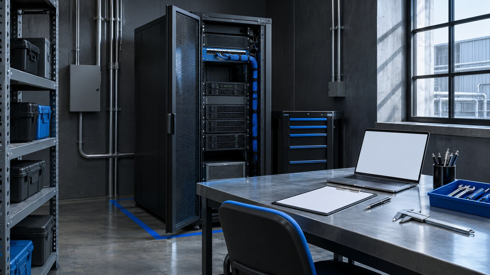

Ограничили задачу
Только поиск в согласованных инструкциях; никаких самостоятельных команд оборудованию.
Техническая поддержка производства / кейс-концепт
Инструкции лежат в разных папках. Специалист ищет нужную редакцию вручную, а новый сотрудник каждый раз обращается к коллеге. В пилоте проверяем, может ли помощник находить ответ с указанием источника и передавать спорные вопросы человеку.
Только поиск в согласованных инструкциях; никаких самостоятельных команд оборудованию.
Разделили документы по версиям и настроили доступ к разрешённым материалам.
В ответе есть источник, редакция и переход к фрагменту документа.
Составили набор вопросов, включая отсутствие данных и противоречия между инструкциями.

Пилот помощника, подготовленная база знаний и протокол проверки ответов. Запуск в работу — после оценки пилота.
В концепте показан предполагаемый состав результата, а не завершённый клиентский проект.Обсуждение задачи → структура и прототип → сборка → проверка и передача.
Срок после оценки базы знаний. Точный состав, календарь и условия фиксируем перед началом работ.
Посмотреть похожий концептПоддержка и токены оплачиваются отдельно после пилота.